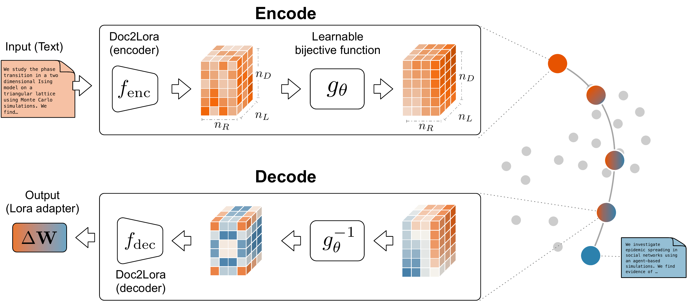
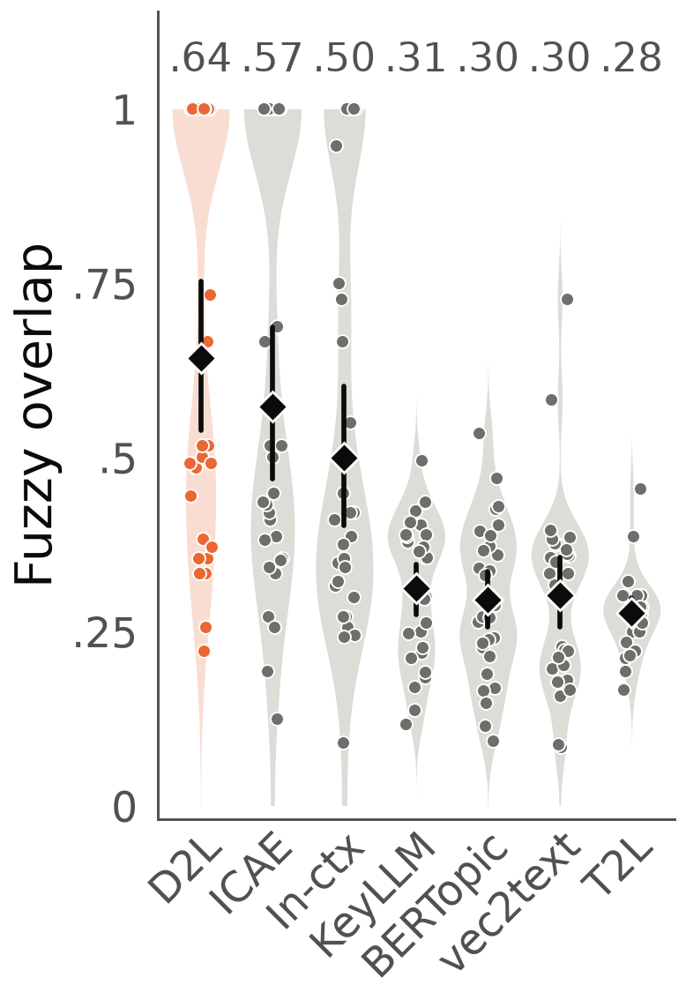
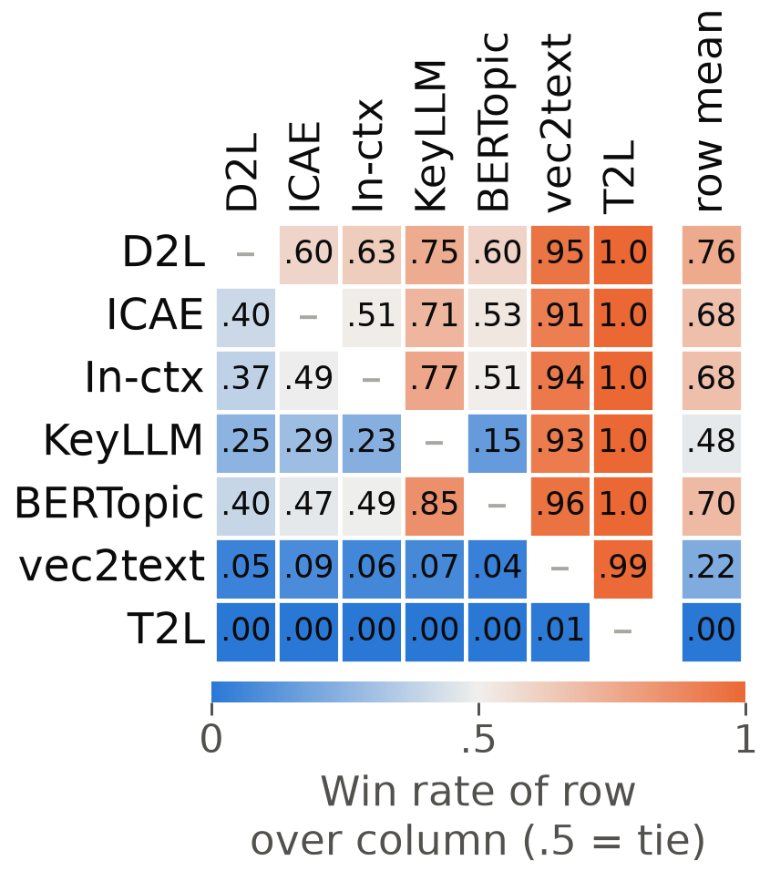
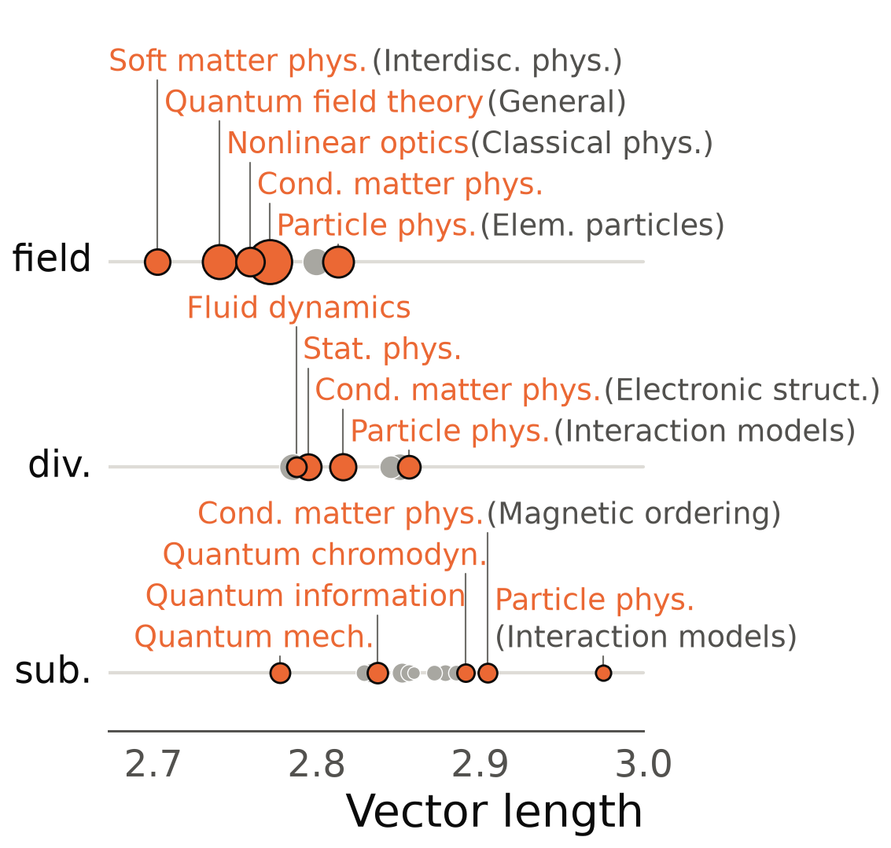
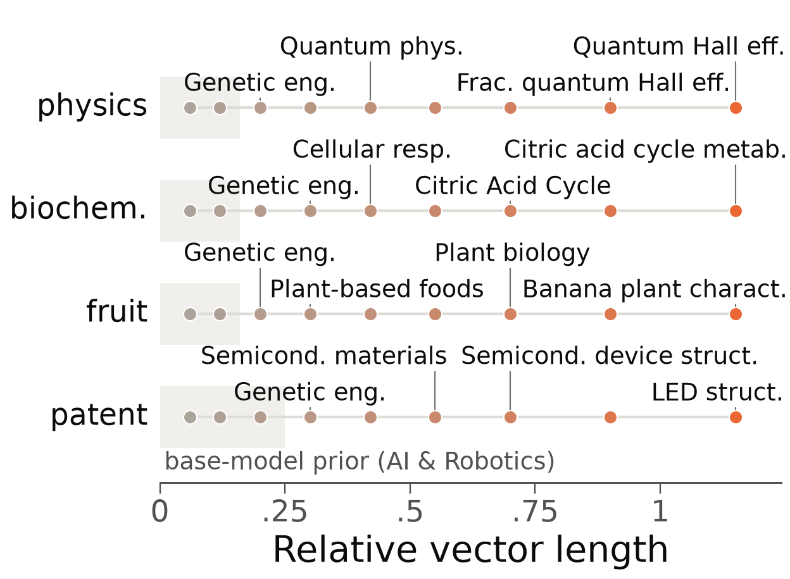

We construct a map of scientific papers where every point is a large language model, open to questions about the encoded ideas, including regions with no existing papers.
An embedding places a paper as a point in a vector space. Papers on similar topics cluster together, making it easy to find related work or recommend what to read next. Most embeddings are optimized for search. Understanding how papers cluster together helps us understand the current landscape of scientific knowledge production.
Beyond search, this vector space invites generation: mixing papers through simple vector operations creates new points, mirroring combinatorial novelty, the recombination of existing ideas into new ones. The key question we ask is: what idea does a new mixed point represent?
Standard embeddings can't answer this directly because the components of the vector have no clear interpretable meaning. Usually, we check which papers are closest and try to infer the meaning, but this heuristic relies on the premise that nearby papers accurately represent the interpolated area, which does not always hold. Crucially, the most interesting regions—combinations that haven't been tried—are precisely where there are no actual papers.
We use Doc-to-LoRA, a hypernetwork that reads a document and creates a LoRA adapter: a small module that changes the output of a language model as if it had read the document.
While large language models have many parameters, the embedding is compact as it contains only the information about the document. It offers idea arithmetic: any point—single document, group average, or an interpolation—can be turned into a LoRA adapter and loaded into a language model for direct question answering.

For example: we embedded two recipes, Italian cacio e pepe and Japanese kake udon. The Italian adapter produces “Pecorino Romano” as the cheese. Halfway between the two, the model describes “Kake Udon with Creamy Parmesan Sauce”—mixing noodles from one and cheese from the other.
Source document A, as encoded.
Decoded at the midpoint, verbatim. Prompt: “Write out this recipe: give the dish a name, list the ingredients, and describe the preparation steps.”
Source document B, as encoded.
We evaluated on American Physical Society physics papers labeled by PACS, a hierarchical topic scheme for organizing fields and subfields.
For each topic, we averaged paper embeddings and asked the model to generate a 2-3 word label. We compared these outputs to official PACS names and five baselines (including keyword extraction and vector-to-text decoders). Doc2LoRA's labels best matched the official names by word overlap and were preferred in language model panel comparisons.


Averaging divergent papers shortens the embedding vector. Shorter vectors tend to be more generic, broader categories, and the level of generality can be controlled by shrinking the vector length (right). Shrinking a Wikipedia article's vector shifts its label from Citric acid cycle metabolism to Cellular respiration. Near zero, the model defaults to its base answer.


We interpolated between two physics papers and, at each point, asked the model to write an abstract. Move the slider to shift the weight from paper A to paper B. Doc2LoRA's abstract follows the weight and combines terms from both papers near the switch, while a language model given both papers and the weight in its prompt blends them at every weight.
This research investigates the learning of quantum gates in a unitary model of quantum computation, where a quantum system evolves under a unitary transformation and is trained using a quantum neural network. The problem involves determining whether a quantum system can learn a target unitary transformation—possibly imperfect—by iteratively adjusting a set of quantum gates, with the goal of achieving a high fidelity of the learned transformation. The study employs a statistical mechanics approach, specifically the replica method and annealing techniques, to analyze the learning process in the large-N limit, where N represents the number of qubits in the system. The key finding is that the learning process is governed by a critical temperature T, and the asymptotic error rate scales as 1/N² for smooth unitaries, with a universal scaling law that depends on the smoothness of the unitary transformation. For nonsmooth unitaries, the error rate can exhibit a more complex, potentially divergent behavior, and the learning process may fail to converge to a high-fidelity state.
This research investigates the statistical-mechanical behavior of quantum neural networks under the influence of both stochastic training and quantum decoherence, blending the framework of learning from examples (A) with the principles of quantum error correction (B) in a 58:42 proportion. The central problem is to understand how the generalization performance of a quantum neural network—trained on random examples—degrades or improves in the presence of arbitrary decoherence affecting up to t qubits, and whether the statistical-mechanical predictions of generalization curves (e.g., inverse power laws or discontinuous transitions) remain valid in a quantum setting. Using replica theory and the annealed approximation, we analyze the average generalization error as a function of training examples and network size, while incorporating quantum error-correcting codes that protect the encoded information against decoherence. Our findings reveal that for realizable learning tasks, the high-temperature and annealed approximations still provide accurate descriptions of generalization, even when quantum noise is present, but for unrealizable rules, the system exhibits a phase transition to a spin-glass-like state with degenerate minima, analogous to classical perceptrons, yet now stabilized by quantum error correction. We propose a classification of asymptotic learning curves in quantum neural networks, showing that the…
Doc2LoRA is designed for text generation, not ranking. Adding a small reversible transform, g, trained on 42,332 citation pairs from OpenAlex, improves its search results to the level of the commonly used text embeddings. g is the only trained part and preserves reversibility, so all points can be decoded as before.
We evaluated Doc2LoRA (with and without g) against five common text encoders on 14 benchmarks covering four tasks: next-paper prediction, topic classification, collaboration prediction, and author disambiguation. Without g, Doc2LoRA ranks last. With g, it performs on par with EmbeddingGemma and GTE, ahead of Instructor and SPECTER2, and behind SBERT.
Swipe sideways to see the whole chart.
| Task | Field / dataset | Doc2LoRA | Text encoders | |||||
|---|---|---|---|---|---|---|---|---|
| without g | with g | SBERT | GTE | EmbeddingGemma | Instructor | SPECTER2 | ||
| Next-paper predictionAUC | Economics | .813±.001 | .910±.001 | .937±.001 | .910±.001 | .906±.001 | .877±.001 | .903±.001 |
| Psychology | .799±.001 | .923±.001 | .937±.001 | .912±.001 | .910±.001 | .888±.001 | .908±.001 | |
| Physics | .880±.001 | .958±.001 | .956±.001 | .962±.001 | .947±.001 | .908±.001 | .941±.001 | |
| Topic classificationmacro-F1 | Economics | .242±.015 | .374±.022 | .418±.022 | .398±.023 | .362±.021 | .379±.021 | .344±.021 |
| Psychology | .217±.010 | .340±.020 | .366±.023 | .350±.019 | .358±.020 | .348±.026 | .319±.020 | |
| Physics | .590±.012 | .590±.009 | .573±.011 | .587±.010 | .588±.010 | .574±.010 | .598±.007 | |
| Collaboration predictionAUC | Economics | .596±.011 | .629±.012 | .655±.011 | .627±.012 | .633±.012 | .620±.012 | .632±.011 |
| Psychology | .602±.012 | .687±.010 | .691±.011 | .668±.011 | .666±.011 | .649±.011 | .665±.011 | |
| Physics | .792±.004 | .795±.004 | .832±.003 | .839±.003 | .828±.003 | .854±.003 | .826±.004 | |
| Author-name disambiguationB³ F1 | zbMATH | .933±.001 | .932±.001 | .944±.001 | .939±.001 | .934±.002 | .936±.001 | .934±.001 |
| QIAN | .787±.005 | .850±.004 | .865±.004 | .866±.004 | .832±.004 | .832±.004 | .832±.004 | |
| ArnetMiner | .678±.004 | .708±.005 | .698±.005 | .698±.004 | .706±.004 | .679±.004 | .669±.004 | |
| PubMed | .693±.007 | .815±.006 | .832±.006 | .792±.006 | .822±.006 | .801±.006 | .739±.006 | |
| KISTI | .708±.002 | .767±.002 | .793±.002 | .785±.002 | .771±.002 | .754±.002 | .746±.002 | |
Traditional maps of science show only published work. Here, we built a new map that also covers unexplored areas—spaces between fields and combinations of ideas that haven't been tried. We can target gaps directly: What problem would a paper here address? What methods and experiments could bridge the divide?
This enables new questions: Can we trace a path across disciplines and see how concepts connect? Can we limit the map to papers up to a certain date, generate ideas for the "knowledge holes," and later see if those predictions appear in new research?
We must emphasize that our map reveals potential ideas, but verifying their validity is left for future investigation. The map does not assess how promising an idea is. That judgment is up to people. Yet, we believe that the Doc2LoRA embedding is a powerful tool for generating novel research questions and invites scientific curiosity.
@article{mansuri2026doc2lora,
title = {Doc2LoRA Provides Decodable Representations of Scientific Ideas},
author = {Mansuri, Chand Sahil and Zachariah, Joel and Kojaku, Sadamori},
journal = {arXiv preprint},
year = {2026}
}